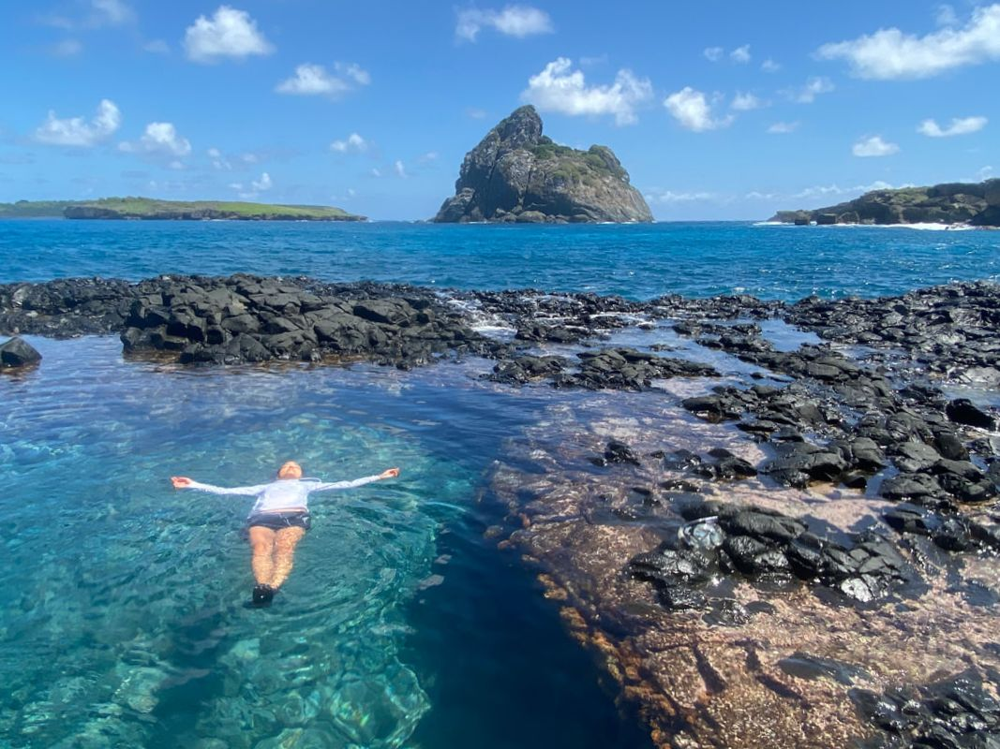
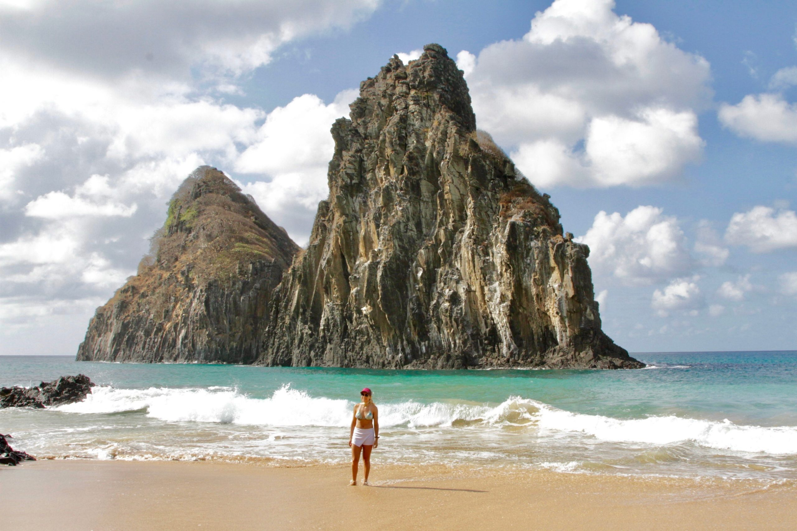

Trilhas
Experiência única da ilha com as prais mais bonitas do Brasil.
Experiência única da ilha com as prais mais bonitas do Brasil.
Com ínicio na estrada da Conceição, a caminhada começa na parte baixa e sobre em degradê em uma caminhada pelas pedras até chegar ao Piquinho.
De lá tem uma visão do alto e ao fundo da pedra do Morro do pico (cume mais alto da ilha com 321m de altura). Possibilitando uma visão única da ilha mais bonita do país.
Início às 16h30.
Nesta trilha será possivel conhecer a piscina do Morro de são José, uma ilha secundária do arquipélago de Fernando de Noronha.
Na maré baixa, um caminho de pedras se forma entre a ilha principal e o Morro de São José.
A trilha é feita, em sua primeria parte caminhando e depois a nado. A piscina natural é um dos pontos mais bonitos da ilha e rende lembranças incríveis, além de lindas fotografias.
A caminhada começa pela Vila dos Remédios, passando pelas praias do Cachorro, Meio e Conceição, encosta do Morro do Pico e pelas praias do Boldró, Americano, Bode, Cacimba e Baía dos Porcos. Faremos paradas para o banho e mergulho e flutuação nas praias que permitirem condições para a atividade.
Tuor realizado a pé pelo lado da ilha voltando para o continente, conhecido como mar-de-dentro. Essa parte da ilha tem como principal característica águas mais tranquilas, de cor esverdeadas e beleza cênica.
A trilha dura 5h com horários a combinar. O passeio é indicado para quem quer conhecer a ilha com tranquilidade. Mas tem que ter fôlego, pois a trilha exige um pouco mais na caminhada, incluindo terrenos com pedras, areia e subida. Horário: A combinar, conforme horário da maré.
Realizada no extremo sudoeste de Fernando de Noronha que fica a versão mais desconhecida e isolada desse arquipélago.
É uma trilha de sete quilômetros, em forma de "U", feita em seis horas de trekking pesado e com vistas dos mares de Dentro e de Fora, entre as praias do Sancho e a do Leão. Com início em uma estrada de terra, na Vila da Quixaba.
A trilha, cujo nome é uma referência aos imensos e cortantes capins de até dois metros de altura, começa puxada na ladeira íngreme que leva até um desvio de 800 metros de extensão que da acesso ao VOR, farol usado pela Marinha para orientações de navios e aviões.
É uma versão selvagem de Fernando de Noronha... E para poucos!!
Conheça as belezas de umas das maravilhas mais disputadas de Noronhas.
O passeio é realizado na maré baixa e inicia com visita a uma linda piscina natural localiza no MORRO DE FORA.
Em seguida conduzimos você até o famoso BURACO DO GALEGO que está localizado na Praia do Cachorro.
em nossa última parada do passeio é apresentada a LASCA DA VELHA. Outra piscina localizada no meio das rochas.